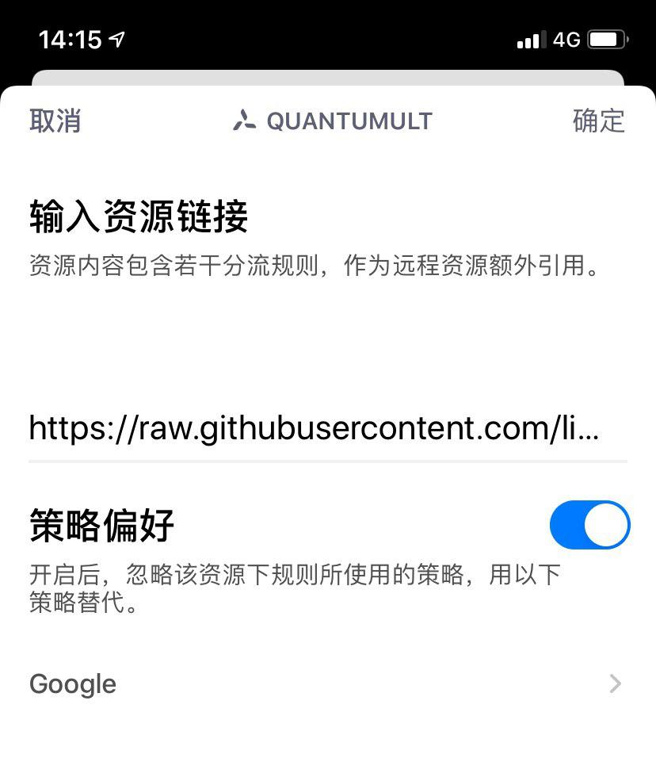

本文隶属于 实用工具/科学上网 分类，点击分类名称可以查看更多相关文章；
主理人说
用好一个工具不难，只要肯放弃。
基础知识普及
以下知识在 Quantumult/Surge 通用；
订阅
前人栽树后人乘凉，我们也不用一个个去配置就可以远程拉取配置资源，一次性配置完毕，例如机场提供的节点（ip地址/密码/加密方式等等），例如别人写好的分流规则（大陆域名走直连/谷歌走代理...）等等；订阅即可获得；
节点
从机场订阅而来的服务器，均可称之为节点，这些节点默认放在策略PROXY下，可手动切换使用；
策略
基础即软件自身携带的策略包括：PROXY/DIRECT/REJECT，分别对应中文为代理/直连/拒绝，后文的进阶教程部分会提供如何新建策略以及三个策略（Available/Robin/Static）模式的说明；
分流规则
DOMAIN-KEYWORD,limbopro,PROXY，这是一条分流规则示例：即包含关键字为limbopro的域名均走代理；分流规则是要配合策略使用的；你可以指定任意网站如limbopro是走直连（Ddirect）还是走代理（Proxy）或者干脆拒绝（Reject）连接网络；
分流规则跟节点一样均支持远程订阅（引用）/手动DIY添加；
规则类型
25.10.2019 更新
添加分流规则时对类型选择，以及类型的相关知识；
从上到下，依次为HOST （完整域名匹配，举例limbopro.xyz）/HOST-SUFFIX（域名后缀匹配）/HOST-KEYWORD（域名关键字匹配，举例limboppro）/USER-AGENT（浏览器用户代理匹配，举例*abc?）/IP-CIDR（无类别域间路由例如192.168.xx）/GEOIP（GeoIP数据库IP匹配，参数填US，则为美国 ip 数据库匹配，所有美国IP匹配该规则则执行）；
分流规则如何订阅
Rules / 分流/去广告规则：Surge / Shadowrocket / Quantumult/ Quantumult X 及详细配置步骤教程（萌新小白版本） ，参考此文；
网络活动日志
这里可以看到iOS所有网络请求，时间节点与实际请求发生时间一致，你可以利用日志检查节点/策略/分流的配置是否起作用；
进阶教程
默认的情况
我相信大家节点都是非常多的，可选择性极多；例如我们看YouTube，分流规则设定默认走PROXY策略，即你选什么节点它就走什么节点；（查看节点的说明；这里很关键的一点是默认情况下走PROXY策略）；
创建策略
如何创建新策略
1.进入QuantumultX，点击右下角三菱按钮；
2.找到节点模块下引用，点击；
3.往右滑任意订阅，点击更多即可创建策略；
4.记得填写策略名；
策略模式解释
静态策略-手动选择： 跟PROXY一样；
健康检查-自动选择： 从第一个节点进行可用性检查，如果可用即选择第一个节点，不可用则继续检查直到节点可用；
负载均衡-轮询调度： 轮流调用节点使用，如果使用该策略则访问谷歌时你的ip是一直变化的；
重点知识
务必记住每个策略下都可以有很多节点，这些节点是由你自己选择的（可长按策略图标进行增减），PROXY默认拥有所有订阅而来的节点，随每次更新节点订阅时而有所增减，其中的节点需要手动选择使用；
如何给创建的策略选择节点
策略新建完成后会在QuantumultX主页面显示，如下图；
这个名叫Google的策略的图标也是可以自定义的，在后文会有说明；
Google这个策略是我专门给谷歌搜索用的，所以我选择了一些高倍率节点，策略模式选的健康检查（AVAILABLE）以保证其节点可用；如果你要给Netflix创建策略，那就勾选好那些可以看Netflix的节点就好了，建议选择负载均衡-轮询调度策略模式（我就是这样）；
操作步骤
1.长按策略图标，即可弹出上图；
2.按需增加或删除节点；
分流搭配策略
新策略已经建好并已勾选想要的节点，现在需要配合分流规则使用；
DIY分流规则
1.进入QuantumultX，点击右下角三菱按钮；
2.找到分流模块下添加按钮，点击；
3.填写相应类型，参数，策略选择刚刚创建的即可；
订阅分流规则
1.进入QuantumultX，点击右下角三菱按钮；
2.找到分流模块下引用按钮，点击；
3.左滑任意分流规则的订阅（我这里是谷歌的订阅）；
4.点击编辑；

5.打开策略偏好，选择刚刚创建的策略，这里是Google;
到此，谷歌搜索均走Google策略下的节点了；
自定义策略及其图标
除了默认的PROXY策略，新创建的策略均可自定义图标；
步骤
1.进入QuantumultX，点击右下角三菱按钮；
2.找到配置文件模块下编辑按钮，点击；
3.左滑任意分流规则的订阅（我这里是谷歌的订阅）；
4.点击编辑；
5.找到[policy]
6.就可以看到刚刚创建的新策略及其选中的节点了；
[policy]
static=机场专线, IPLC(TOCN) 港深03, IPLC(TOCN) 港深 01, IPLC(TOCN) 港深 02, img-url=https://raw.githubusercontent.com/limbopro/Zure/master/IconSet/rocket.png
round-robin=Pornhub, IPLC沪港A[1.0], IPLC沪港B[1.0], IPLC沪港C[1.0], IPLC沪港D[1.0], IPLC沪港E[1.0], IPLC沪美A[1.0], IPLC深新A[1.0], IPLC深港A[1.0], IPLC深港B[1.0], IPLC深港C[1.0], IPLC深港D[1.0], IPLC深港E[1.0], img-url=https://raw.githubusercontent.com/zealson/Zure/master/IconSet/Pornhub.png
available=Google, IPLC沪港游戏单用户限速4Mbps20倍率, IPLC沪港游戏单用户限速8Mbps35倍率, IPLC深港游戏单用户限速8Mbps35倍率, IPLC 沪日01 (3 倍率), IPLC 沪日02 (3 倍率), IPLC 沪韩01 (1.5 倍率), IPLC 川日01 (3 倍率), IPLC 川港01 (2.5 倍率), IPLC 京德01 (1.8 倍率), img-url=https://raw.githubusercontent.com/limbopro/Zure/master/IconSet/Google.png7.只需在选中的节点后面，添加图标的地址即可；img-url=https://raw.githubusercontent.com/limbopro/Zure/master/IconSet/Google.png
注意事项
0.节点名称后面记得加半角逗号（即英文的逗号,），参考正确示例；另外，不建议在 编辑这里直接修改策略模式名称AVAILABLE（健康检查-自动选择）/STATIC/ROUND-ROBIN，否则将导致策略不可用；
1.不建议在编辑配置文件这里直接修改策略名否则将导致策略不可用；如需重建或删除策略，请在编辑配置文件这里删掉该策略，直接删除即可，QuantumultX主页面的图标也会跟着消失；
正确示例
给新建的策略自定义图标示例：
available=Google, 节点1, 节点2, img-url=https://raw.githubusercontent.com/limbopro/Zure/master/IconSet/Google.png哪里搞图标
主理人自用图标：https://github.com/limbopro/Zure
引用源库：https://github.com/zealson/Zure
当然，你也可以folk，自己上传图标以便进行自定义图标时引用；
看懂了，却不想动手？
毒奶粉特供配置文件
提前为 QuantumultX 预设10个策略及其策略图标，去广告规则，主流站点分流规则，以及无需拔卡看Tiktok，解锁VSCO会员等脚本；https://github.com/limbopro/Profiles/blob/master/limbopro/Gift/README.MD
附加知识点 FAQ
图标双排
为什么我的策略图标是双排的（上下两排）？默认是一排；
Quantumult X 双排的开启方式:
1.前提条件：有效使用时长累计大于12h (不是App运行时长)；
2.开启方式：最上面那栏滑到最左边，再往右拉两下（连续往右滑动）即可；
注：仅 iPhone 可开启简洁模式，iPad 单排双排小图标均无法开启；
联系主理人
1.关注频道 https://t.me/limboprossr 不失联；
2.毒奶粉们（我管我的Fans）可联系 TG机器人 或发送 邮件 获取帮助；
3.或点击本页面右下角的聊天按钮联系；
附注
-3.提前为 QuantumultX 预配置10个策略及其策略图标，去广告规则，主流站点分流规则，以及无需拔卡看Tiktok，解锁VSCO会员等脚本
-2.Rules / 分流/去广告规则：Surge / Shadowrocket / Quantumult/ Quantumult X 及详细配置步骤教程（萌新小白版本）
-1.GitHub 新手指南，从入门到放弃（5分钟教学，你也可以拥有自己的仓库）
0.iOS 使用 Surge/Quantumult/Shadowrocket /QuantumultX 解锁 TikTok 区域限制（免拔卡）10.10.2019
1.简评部分机场丨(SS机场推荐/SSR机场推荐/V2Ray机场推荐)
2.卡车家族丨4K秒开丨SSR机场推荐丨8元/月起，折后 6.4元/月起
3.高速内网IPLC专线机场 丨8K秒开丨10元/月起丨京港/沪港/深港/深新/沪美线路
4.Surge/Shadowrocket/Quantumult/SSR/V2rayNG/如何自定义分流/代理规则（PAC）
5.关注 TG 订阅频道，随时涨姿势
版权属于：毒奶博主
联系我们： https://limbopro.xyz/6.html
电报频道： https://t.me/limboprossr
必备技能： https://limbopro.xyz/archives/2910.html
网站镜像： https://limbopro.github.io本文链接：https://limbopro.xyz/archives/3846.html
版权声明：
本文采用 CC BY-NC-SA 4.0 许可协议 ，转载和引用时请注意遵守协议！